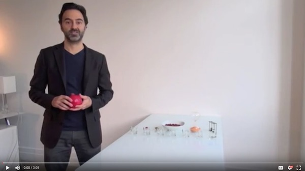

Welcome to Day 2 of the 20/20 Life Vision Challenge!
If you still haven’t completed your Day 1 Assignment (The Rocking Chair) of the 20/20 Life Vision Challenge, go back and do so before proceeding. If you did, I am sure that it prompted some deep reflection on your life path. Today, we are continuing to meditate, moving now to a more specific and immediate area of your life, life categories.
What if you could wake up next week and spend your time doing whatever you really want to do? Think about your life right now, and what typical weekdays and weekends are like. How would you break down your life, in terms of categories; and then, estimate how much time you spend on each area in a given week – 168 hours? What specifically would you like to do more of? Less of? Who would you like to spend more time with? Less time with? Where would you like to spend more time, and less time? Imagine that next week, anything is possible.

I am a proponent of having people create their own Life Categories, and using whatever naming conventions they prefer; however, in the end, it all really maps to the same core activities. Sleep is sleep, work is work, etc. As for me, I break my life, at this current era, down into 7 main categories and 40 or so sub-areas within those 7 categories. I call those sub-areas “bugs”, which is where the concept for Timebug was born. You can use my Life Categories (listed below, with an example of the weekly time allocation) or something that better fits how you think about and manage your life.
More (or Less) Time & Energy
How Do I (Want To) Spend My Time? [Weekly View]
3. a) Write down at least 3 things you want to do less of in general.
3. b) Write down at least 3 things that you to do more of.